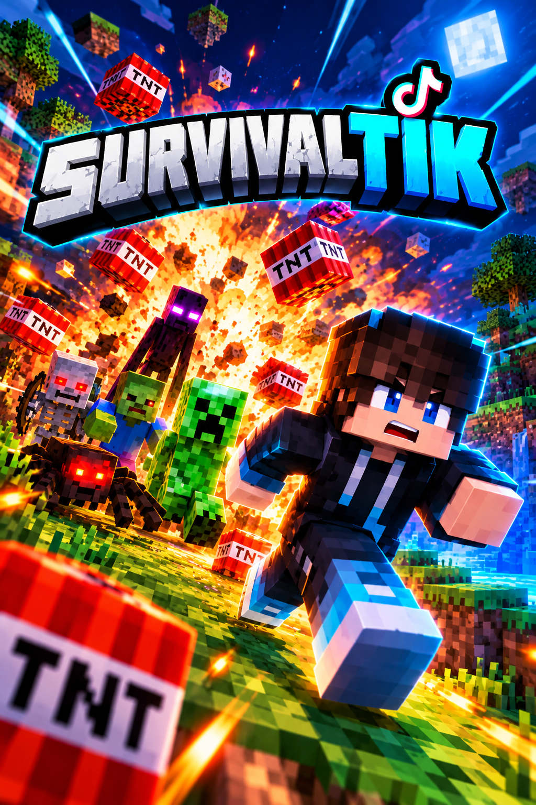

Survivaltik
Juegas Minecraft normal y los regalos de tu live te ayudan o te molestan: te lanzan zombies, TNT y rayos, o te regalan diamantes, manzanas doradas y un golem de hierro. Aquí decides qué regalo hace qué. Funciona con Minecraft Java 1.21.4 (por ejemplo desde TLauncher).
- TikTok Live
- Juego conectado

TikTok Live
Vincula tu usuario de TikTok desde la sección "Juegos" del panel.
Tu juego
Sigue la guía de abajo para conectar Minecraft. Aquí ves si ya está listo.
- Minecraft Java Sin conexión
Conecta tu Minecraft: guía paso a paso
Son unos 10 minutos la primera vez. Después solo abres el juego y se conecta solo. No necesitas pagar ningún servidor.
Funciona con
- Minecraft Java Edition 1.21.4 con Fabric
- En PC (Windows), con TLauncher o con el launcher oficial
- Mundos de un jugador, mundos abiertos a LAN y servidores Fabric 1.21.4
No funciona con
- Otras versiones de Minecraft (1.20, 1.21.5 o superior, 26.x…)
- Minecraft Bedrock: celular, consolas o «Minecraft para Windows» de la Microsoft Store
- Forge ni NeoForge
-
1
Instala TLauncher
Descárgalo desde tlauncher.org, instálalo y ábrelo. Cuando te pida una cuenta, escribe el nombre de jugador que quieras (por ejemplo tu nombre de TikTok) y guárdala. Si ya tienes TLauncher, salta al paso 2.
-
2
Elige la versión «Fabric 1.21.4» y ábrela una vez
Abajo, junto al botón amarillo «Entrar al juego», abre la lista de versiones y elige Fabric 1.21.4. Pulsa Entrar al juego: la primera vez descarga todo y puede tardar varios minutos. Cuando aparezca el menú de Minecraft, ciérralo (esto crea la carpeta de mods).
¿No ves «Fabric 1.21.4» en la lista? Instálala con el instalador de Fabric: en «Minecraft Version» elige 1.21.4 (no la más nueva), deja la carpeta que trae y pulsa Install. Después abre TLauncher y busca esa versión de Fabric en la lista.
-
3
Descarga el mod y ponlo en la carpeta «mods»
Descargar mod (InteraktikMod.jar)
Abre el Explorador de archivos de Windows, pega esto en la barra de direcciones y pulsa Enter:
%appdata%\.minecraft\mods. Si no existe la carpetamods, créala. Copia ahíInteraktikMod.jar.Atajo: el instalador de Windows (pestaña Minecraft, sección Survivaltik) comprueba lo que te falta, copia el mod por ti y guarda tu llave, así que puedes saltarte este paso y el 5.
Importante: que sea el único archivo de esa carpeta. Mods hechos para otra versión (como JourneyMap) hacen que Minecraft no abra. No necesitas instalar Fabric API.
-
4
Abre tu mundo
Vuelve a abrir TLauncher con Fabric 1.21.4, entra a Un jugador y crea un mundo nuevo o abre uno que ya tengas.
-
5
Pega tu comando en el chat (solo la primera vez)
Dentro del mundo pulsa T para abrir el chat, pega el comando con Ctrl + V y pulsa Enter. Queda guardado: la próxima vez el mod se conecta solo al abrir cualquier mundo.
Si regeneras la llave, la anterior deja de funcionar y tendrás que pegar el comando nuevo.
-
6
Comprueba que quedó conectado
En el juego aparece «Interaktik conectado ✔» y, arriba en esta página, «Tu juego» pasa a Conectado. Cuando quieras revisarlo escribe
/interaktik estadoen el chat del juego. -
7
Conecta tu TikTok y crea tus reglas
Arriba pulsa Conectar en «TikTok Live» y abajo crea reglas: eliges un regalo y lo que hace en tu mundo (mobs, TNT, efectos, diamantes…). Usa Probar para ver cada acción en tu juego al instante.
Algo no funciona
- Minecraft no abre o muestra un error de mods: deja solo
InteraktikMod.jaren la carpetamodsy vuelve a intentar. Comprueba que abres la versión «Fabric 1.21.4» y no otra. - Al pegar el comando dice «Comando desconocido o incompleto»: el mod no está cargado. Revisa que el archivo esté en
%appdata%\.minecraft\modsy que abriste «Fabric 1.21.4». - Dice que la llave no es válida: copia el comando de nuevo desde esta página (si regeneraste la llave, el anterior ya no sirve).
- Sigue en «Sin conexión»: escribe
/interaktik estadoen el juego; ahí dice el motivo. Revisa también tu conexión a internet. - Uso otra versión de Minecraft: por ahora el mod solo existe para 1.21.4. Escríbenos qué versión usas y la preparamos.
Avanzado: tengo mi propio servidor (Paper)
Si juegas en un servidor tuyo con Paper o Purpur (1.20 o superior), puedes usar un plugin en lugar del mod.
- Descarga el plugin Descargar plugin (.jar)
-
Cópialo a la carpeta
pluginsde tu servidor y reinícialo una vez. -
Pega esta llave en
plugins/Interaktik/config.yml(camposerver-key) y ejecuta/interaktik reload. - Escribe aquí tu nombre en Minecraft: a ese jugador se le aplican las acciones.
Reglas de regalos
Cada regalo dispara una acción en tu juego. Un combo multiplica el efecto: 5 rosas de "3 zombies" lanzan 15 zombies.